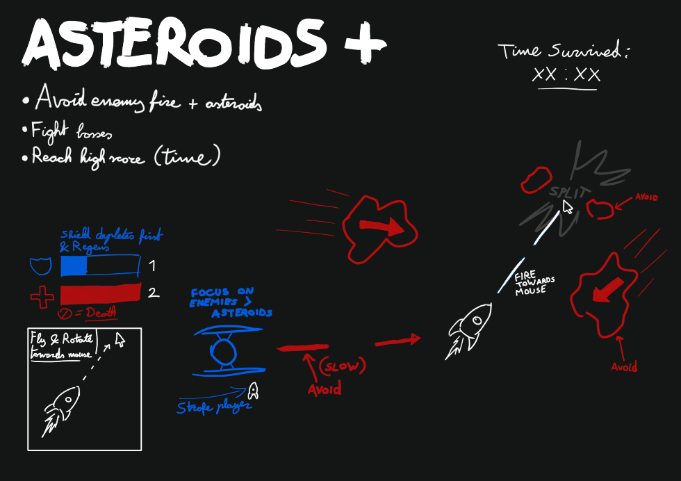
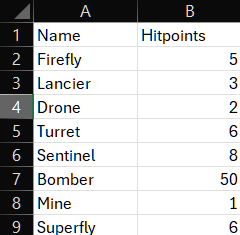
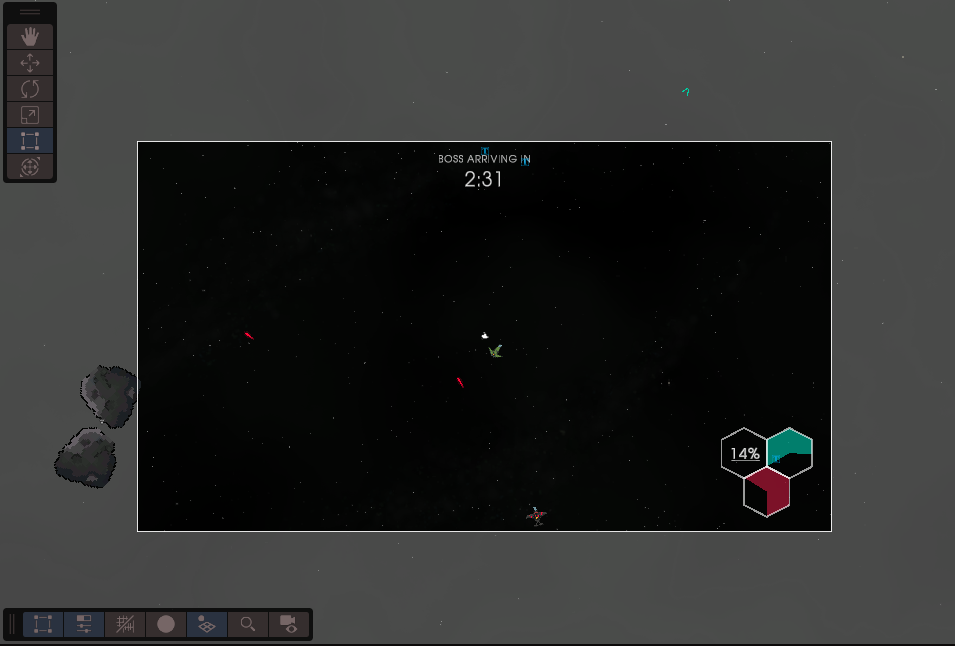
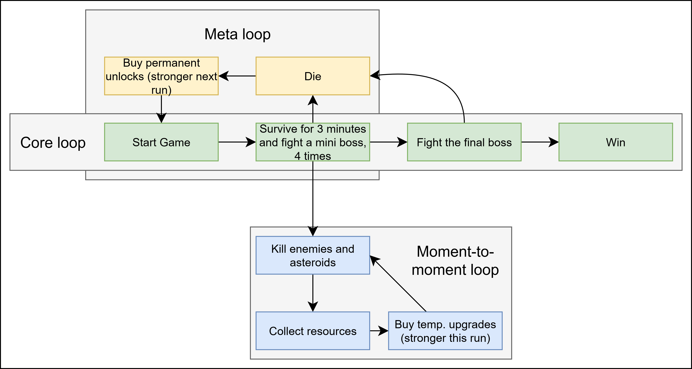

Thrust Factor is a tight, difficult, movement based space shooter roguelite, loosely based on the classic arcade game Asteroids. The player avoids lasers, missiles and space rocks while battling bosses and gathering upgrade modules to improve their ship.
Design Goal
I wanted to modernize the retro game Asteroids. Apart from sound and graphics, I set out to improve four aspects:
Modernized controls
Faster-paced and more active gameplay
Better enemy AI
More long-term goals

An early concept sketch, outling movement, enemy behaviour and health systems.
First implementation of the mouse rotation system. Note the smoothing effect, which prevents instant 180 degree turns. Boosting significantly slows down turning, a balancing mechanic.
Controls
After multiple iterations, it turned out that using the mouse to both aim and rotate worked really well. It means you fire in the direction you're flying: the player will be pointed towards the danger.
This control scheme has a steep learning curve, but allows for very precise movement, lending to a high skill ceiling.
Forcing Movement
There was a problem: just like in classic Asteroids, players initially remained stationary, turning the game into a turret sim.
Instead of bloating the game with new, unneccessary mechanics, I decided to work with the tools I had, and design enemy AI that forces the player to employ a more active playstyle.
Each one of the three basic enemies, as well as the asteroids themselves, play a specific role in getting the player moving.
Asteroids have a high probability of spawning with a force towards the player.
The Lancier locks onto the player, and if the lock isn't broken, fires a tracking missile. Simply flying away from one is not an option. Note the "Lock Warning" UI and off-screen missile marker.
The Firefly, the most basic enemy, fires lasers that can't be shot down. They have to be dodged.
Drones fire laserbeams across the screen from outside the player's FOV. The player can make a choice to either dodge, or fly towards the drone to destroy it.
The player gets hit continuously. Bottom left: Shield, bottom right: Health.

Integer based HP scoring of enemies. Excerpt from enemy data excel sheet.
Less is more
Instead of health being a continuous scale, and damage being some arbitrary value, I opted for a tighter system with lower numbers: you have 3 health points, and the player deals 1 damage every time.
This system rewards precision, punishes carelessness, and is much easier to communicate!
No World Borders
Instead of adding artificial boundries to the map, I used the loop-around mechanic of classic Asteroids, only with a much larger loop distance. This system is inspired by the Blue Sphere levels of Sonic Mania. If an object is too far out of view, it loops back to the other side. Not a single playtester ever noticed!

An in-engine view of the viewable area.

A flowchart showing the final game loops, and how they relate to each other. Note the addition of the meta-loop (yellow).
Loops and Progression
There are three important gameplay loops at play. The addition of a meta loop, in this case buying permanent unlocks, was necesarry to give players concise and measureable goals to work towards in between runs.
Difficulty vs Progression
One of my design pillars was that Thrust Factor should be difficult and skill-based. The addition of permanent upgrades would clash with that idea. That's why unlocks do not simply make the player stronger:
Instead, they unlock new abilities, such as flares (defense against missiles), and their upgrade tree. It adds a layer of complexity and choice to the game.
1: The player buys the "Countermeasures" unlock in the menu. 2: The player chooses to upgrade it with "Auto Deploy". 3: The upgraded unlock in action.
Post Mortem
Turning Asteroids into Thrust Factor was incredibly fun and rewarding. The project taught me a lot about system design in general, but especially about the interaction between different game loops.
I didn't expect that the biggest challenge would be to get players to move around more. Some players still preferred to play more passively, which frustrated me at first. But I realized that the game supporting multiple viable playstyles is actually a good thing, and trying to force every player into a specific playstyle is counterproductive.
I haven't touched upon sound design and music, which in my opinion are definitely part of game design as well, and I could dedicate another entire page to. You can listen to the soundtrack here.